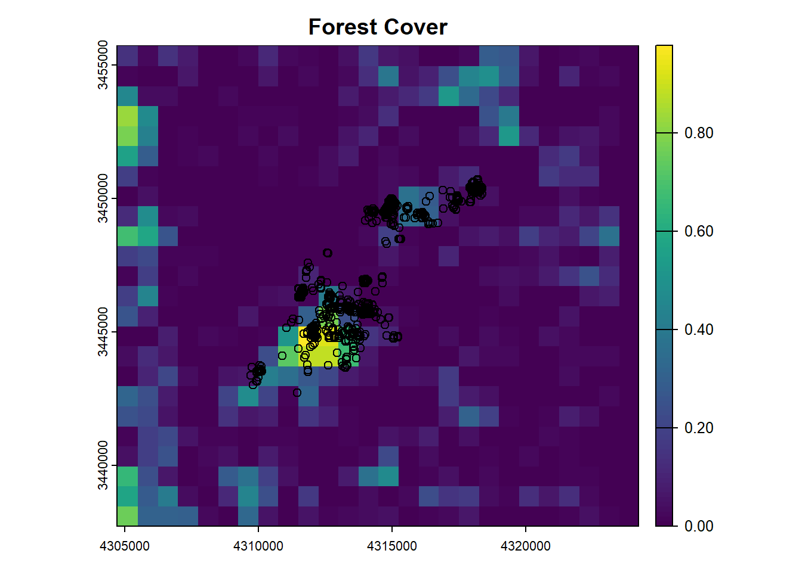
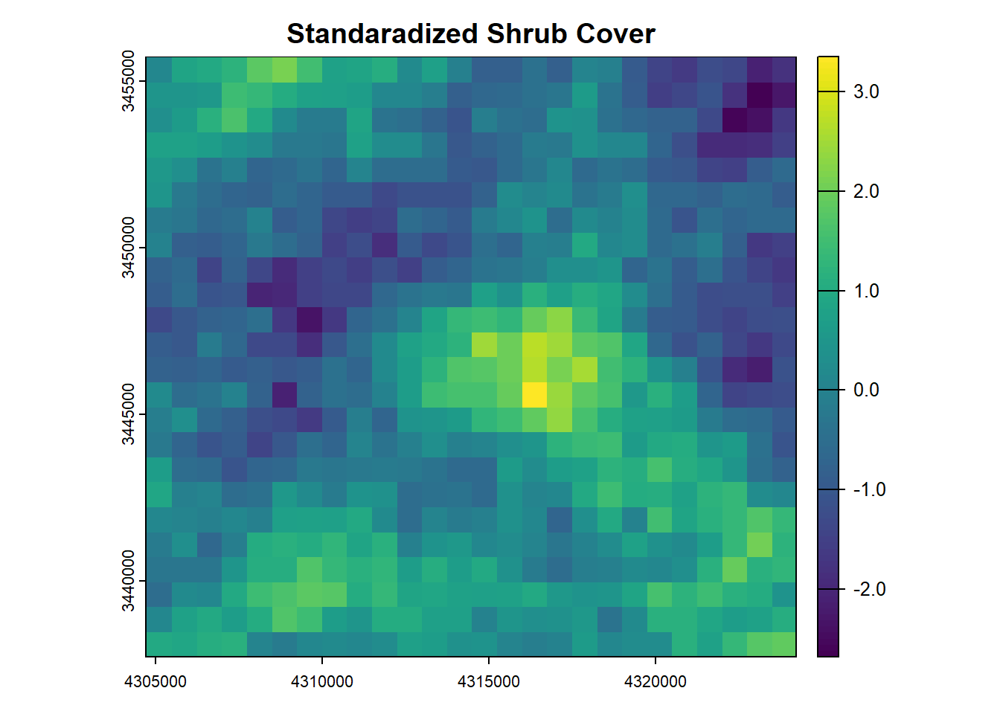

#Look at deer data and spatial layers to be used as covariates
forest.cover = readRDS("sp.layer.forest")
plot(forest.cover,main="Forest Cover")
points(deer)

Brian Gerber
November 6, 2024
Conduct a sensitivity analysis to investigate how many available samples are needed for the slope coeficients to be estimated with minimal approximation error. Consider a range of sizes for the available sample between 50 and 500,000. Fit the same model (case_ ~ forest + cover) to each of these datasets. Extract the slope coeficients for the variables ‘forest’ and ‘cover’. Creat an x-y line plot with these estimates (y-axis) and the size of the available sample (x-axis). Determine generally when the coefficient estimates stabilize. A common recommendation in the literature is to used a 1:1 ratio between used locations and available samples. If you had only fit the model with this size of available how off would your estimates be from the correct/converged/well approximated estimates when using a large available sample.
# Take a really large sample of available locations (the zeros)
rsf.dat.large <- random_points(deer, n = 4000000) |>
extract_covariates(forest.cover) |>
extract_covariates(shrub.cover)
# Decide on how to subset the available samples
availables = c(50,100,500,1000,10000,100000,1000000,2000000,3000000,4000000)
# Find the indices of where the deer locations are (index.1) and the available samples (index.0)
index.0 = which(rsf.dat.large$case_==0)
index.1 = which(rsf.dat.large$case_==1)
coef.mat=NULL
# Loop through the numbers of available samples and iteratively grab an increase set of zeros. Combine
# these zeros with the used locations of deer and then fit the model
for(i in 1:length(availables)){
rsf.smaller = rbind(rsf.dat.large[index.1,],rsf.dat.large[index.0[1:availables[i]],])
fit = glm(case_~forest+shrub.cover, data=rsf.smaller,family=binomial(link="logit"))
coef.mat=rbind(coef.mat,coef(fit)[c(2,3)])
}
knitr::kable(cbind(availables,coef.mat))| availables | forest | shrub.cover |
|---|---|---|
| 5e+01 | -0.6887266 | 0.0406996 |
| 1e+02 | -0.5134734 | -0.3117284 |
| 5e+02 | 0.2009326 | -0.1663946 |
| 1e+03 | 0.1970181 | -0.1573290 |
| 1e+04 | 0.1684757 | -0.1455294 |
| 1e+05 | 0.1836227 | -0.1433593 |
| 1e+06 | 0.1935036 | -0.1421465 |
| 2e+06 | 0.1926889 | -0.1429547 |
| 3e+06 | 0.1894583 | -0.1426449 |
| 4e+06 | 0.1905065 | -0.1420496 |
We can see that the first and second decimal place values converges for both coefficients by 100,000 available samples.
Next, lets specifically compare the converged estimated coefficients to estimates when using a 1:1 ratio of used:available.
rsf.dat <- random_points(deer, n = nrow(deer)) |>
extract_covariates(forest.cover) |>
extract_covariates(shrub.cover)
fit = glm(case_~forest+shrub.cover,
data=rsf.dat,
family=binomial(link="logit"))
summary(fit)
Call:
glm(formula = case_ ~ forest + shrub.cover, family = binomial(link = "logit"),
data = rsf.dat)
Coefficients:
Estimate Std. Error z value Pr(>|z|)
(Intercept) 0.01344 0.07583 0.177 0.859
forest 0.15616 0.17513 0.892 0.373
shrub.cover -0.09752 0.06461 -1.509 0.131
(Dispersion parameter for binomial family taken to be 1)
Null deviance: 2290.2 on 1651 degrees of freedom
Residual deviance: 2285.4 on 1649 degrees of freedom
AIC: 2291.4
Number of Fisher Scoring iterations: 3# Absolute difference b/w converged and non-converged estimates
(coef.mat[10,] - coef(fit)[2:3]) forest shrub.cover
0.03434588 -0.04453154 We can see that if we had used a 1:1 ratio of used to available, we would have underestimated the effect of forest and overestimated the effect of shrub cover.